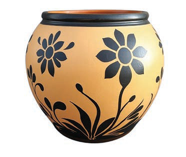
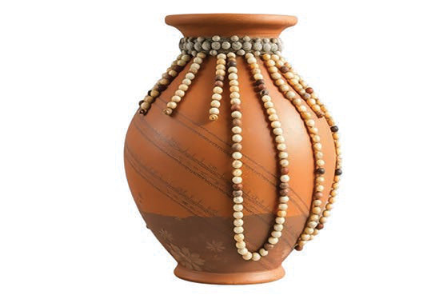

(c) Nakshi kwa stensili
Kutia nakshi kwa stensili kwenye chungu. Tumia stensili yenye miundo unayotaka. Tumia rangi zinazofaa kwa ajili ya udongo. Weka stensili katika eneo ambalo unataka kuchora nakshi. Paka rangi kwa kutumia sponji au brashi kwa kugusa taratibu na kwa usahihi eneo la wazi kwenye stensili. Kielelezo namba 7 kinaonesha chungu kilichotiwa nakshi kwa kutumia stensili.

Kielelezo namba 7: Chungu kilichotiwa nakshi kwa kutumia stensili
(d) Nakshi ya mapambo
Kuweka nakshi ya mapambo kwenye chungu ili kuongeza muonekano unaovutia tumia shanga, vipande vya metali au vipande vya udongo. Unganisha vitu hivi kwa kutumia gundi inayofaa kwa udongo na mapambo ili kushikilia mapambo kwa usahihi. Kielelezo namba 8 kinaonesha chungu kilichotiwa nakshi kwa mapambo ya shanga.

Kielelezo namba 8: Chungu kilichotiwa nakshi kwa mapambo ya shanga